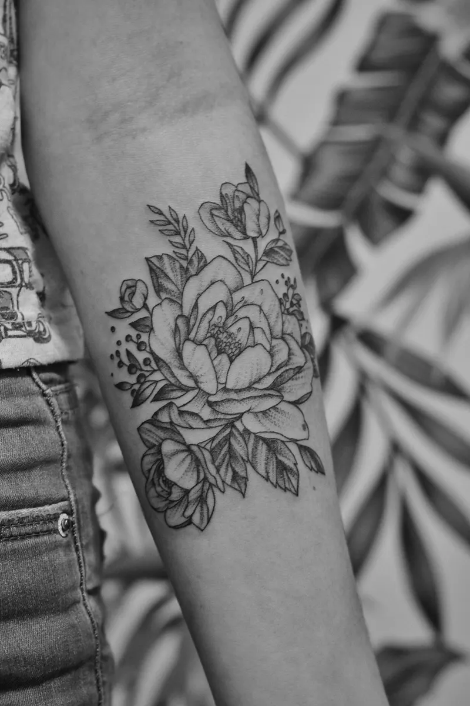
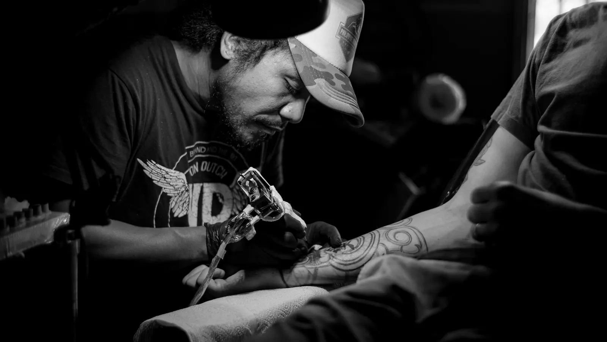
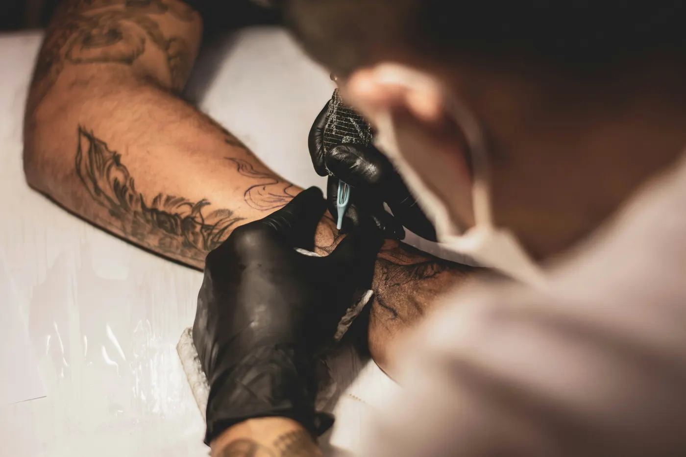

Deel je idee
Stuur via WhatsApp je inspiratie, gewenste plek en ongeveer het formaat.
Persoonlijke tattoos, eerlijk advies en meer dan tien jaar ervaring. Van eerste idee tot blijvend werk.
Een tattoo moet niet alleen vandaag goed voelen. Het ontwerp, de plaatsing en de uitvoering moeten ook over jaren nog kloppen.
Bij Nylo Ink krijg je persoonlijk advies en de tijd om van jouw idee een sterk ontwerp te maken. Geen lopende band, maar aandacht voor ieder detail.
Ontdek de studio


Al meer dan tien jaar een vaste tattoo studio aan de Theresiastraat in Den Haag.
Je krijgt eerlijk advies over formaat, plaatsing en wat visueel het sterkste werkt. Samen wordt jouw idee teruggebracht tot een ontwerp dat helder, persoonlijk en tijdloos voelt.
Stuur via WhatsApp je inspiratie, gewenste plek en ongeveer het formaat.
Samen bespreken we wat werkt en wordt het idee vertaald naar een sterk ontwerp.
Na het afstemmen plannen we de sessie in de studio aan de Theresiastraat.
“Topzaak! Niels is een echte artiest!”
“Top zaak en een echte artiest die Nylo.”
“Kunstenaar.”
Klaar om jouw idee te bespreken? Stuur Nylo Ink een WhatsApp of kom langs aan de Theresiastraat in Den Haag.